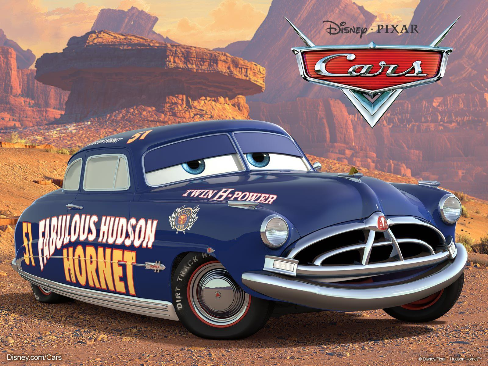

Hudson🏆
El Fabuloso Hudson Hornet fue un famoso automóvil producido por la Hudson Motor Car Company, que compitió en las Grand National Series de la NASCAR, y en las campañas de stock car (coches de serie) de la AAA durante la década de 1950.
Varios pilotos, incluyendo a Marshall Teague y Herb Thomas, condujeron los coches conocidos como los "Fabulous Hudson Hornet".
Hudson Motor Car Company fue uno de los primeros defensores de las carreras de automóviles como un componente integral de la estrategia de ventas de un fabricante de automóviles. La compañía comenzó a apoyar directamente a sus equipos de carreras y a "proporcionar a los automóviles del equipo todo lo que necesitaban para que fueran los más rápidos".
Los pilotos que formaban parte del equipo de Hudson incluyeron a Marshall Teague, Herb Thomas, Dick Rathmann, Tim Flock, Fonty Flock, Jack McGrath, Frank "Rebel" Frank Mundy y Lou Figaro. Juntos lograron 13 victorias en 1951, 49 en 1952 y 46 en 1953.